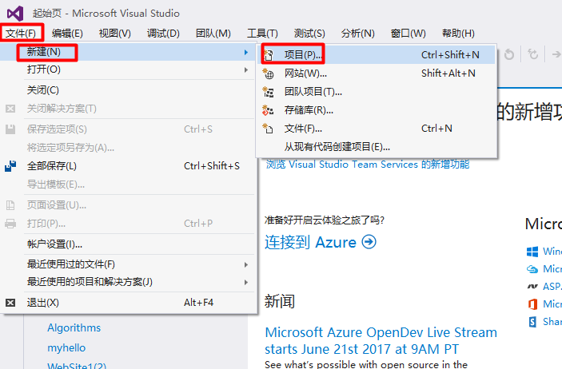

今天整理一下自己的基础篇输入和输出的理解，自己没有研究系统输入和输出函数，以后有时间在去深究，之前在别人的博客里面看到这么一句话分享给大家，“学习就是一个不断抄袭，模仿，练习和创新的一个过程”。
使用VC2015
1.创建项目，【文件】》【新建】》【项目】

2.项目类型为【Win32控制台应用程序】，自己定义项目名称（尽量英文），确定
3.按照Win32应用向导完成设置，【下一步】即可
4.选择应用类型为【控制台应用程序】，附加选项为【空项目】，然后【完成】即可
5.此时在【解决方案资源管理器】中看到所创建的项目
6.右击【源文件】，【添加】》【新建项】，创建c程序
7.编写简单的c程序
#include <stdio.h>
main()
{
printf("hello，world! \n");
getchar();
}8.在vs2015不能直接按【F5】运行，程序会一闪而过的。应该是先选择【生成】》【生成（此处是你的项目名称）】编译生成exe文件，再按【ctrl + F5】运行
输出
printf的作用是按格式在显示器上显示字符。
printf的使用
printf函数双引号中包括三种字符：
（1）以%开头的格式控制字符
（2）以 \ 开头的转义字符
（3）普通字符
/*基础篇 2_1:printf的使用*/
#include <stdio.h>
main()
{
int a; //整型 %d
long b; //长整型 %d
float c; //浮点型 %f
double d; //双精度浮点型 %lf
a = 500;
b = 14758968;
c = 3.1;
d = 2.5E10;
printf("%d\n", a);
printf("%d\n", b);
printf("%f\n", c);
printf("%lf\n", d);
getchar();
}输入
scanf的作用是按格式从键盘接收字符。
scanf的使用:
※使用scanf时，变量前的&号非常重要，这是它与printf的一个明显区别。
※执行到scanf时，程序会停在那里不动等待键盘输入，待用户按下回车后，程序才会继续往下执行，而printf不会。
/*基础篇 2_2:scanf的使用*/
#include <stdio.h>
main()
{
int a;
float b;
scanf("%d", &a); //scanf需要一个&
scanf("%f", &b);
printf("%d\n", a);
printf("%f\n", b);
system("pause"); // vc2015 需要的一个断点
}计算两数之和
※在程序3中，scanf在不修改代码的前提下，就可以实现许多数学运算。
/*2_3计算两数之和*/
#include <stdio.h>
main()
{
int a, b;
scanf_s("%d%d", &a, &b); // vs2015 用scanf 会报错 所以用了 scanf_s 函数
printf("%d\n", a + b); //将两数之和输出在屏幕上
system("pause");
}交换法
※分别输入两个整数给两个整型变量a,b，交换a与b的值，再输出
※等号的作用是将右边的数值装进左边的变量。
※a=b执行以后，b的值并不会消失，它们是复制的关系。
/*2_4:分别输入两个整数给两个整型变量a,b，交换a,b的值，再输出*/
#include <stdio.h>
main()
{
int a,b,c; //a,b为要输入的变量，c为中间变量
scanf_s("%d%d",&a,&b); //输入两个整数给变量a和b
printf("交换前的值为：%d，%d\n",a,b); //先输出交换前的值
//下面是通过中间变量c交换a与b的值
c = a;
a = b;
b = c;
printf("交换后的值：%d，%d\n", a, b); //输出交换后的值
system("pause");
}作业
由用户输入一个梯形上底，下底，高的数值，由电脑算出他的面积，输出在屏幕上（注意：数学运算一般浮点型数据）
/*在电脑屏幕上输入 梯形的上底，下底，高的数值，电脑计算出他们的面积，输出在屏幕上*/
#include <stdio.h>
main()
{
double a, b, h,s; //上 下 高
printf("请输入上底，下底，高；\n");
scanf_s("%lf%lf%lf", &a, &b, &h);
s = (a + b)*h / 2;
printf("梯形的面积为%lf\n", s);
system("pause");
}
以上是自己的一个整理，可能在用vs2015的时候有许多问题，但都一一解决啦，希望共同努力！有异议的可在留言区交流。